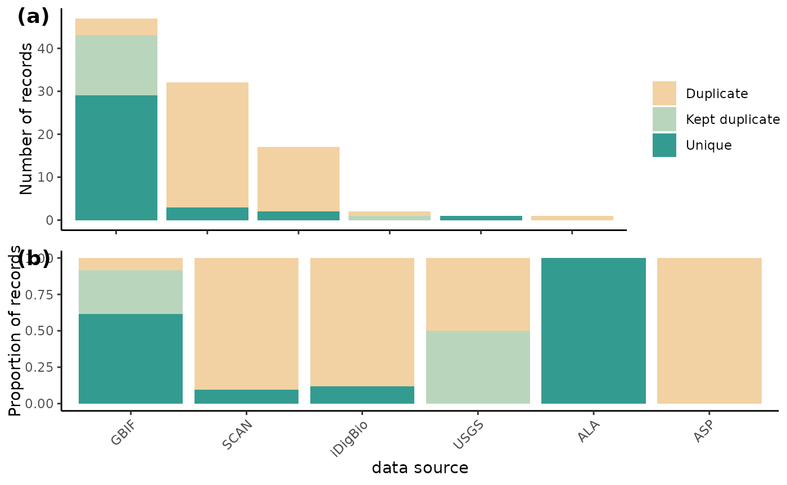
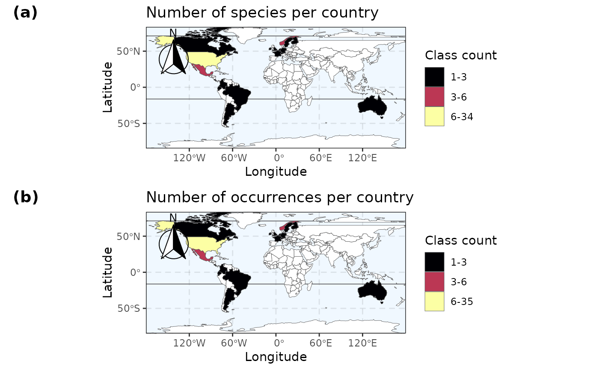

This workflow is meant to be a basic example workflow of how a user might take a flagged version of our (or some other) occurrence dataset and filter for specific taxa or countries, re-apply flagging functions, re-filter the data, or make maps based of those data.
0.0 Script preparation
0.1 Working directory
Choose the path to the root folder in which all other folders can be found.
RootPath <- paste0("/your/path/here")
# Create the working directory in the RootPath if it doesn't exist already
if (!dir.exists(paste0(RootPath, "/Data_acquisition_workflow"))) {
dir.create(paste0(RootPath, "/Data_acquisition_workflow"), recursive = TRUE)
}
# Set the working directory
setwd(paste0(RootPath, "/Data_acquisition_workflow"))For the first time that you run BeeBDC, and if you want to use the renv package to manage your packages, you can install renv…
install.packages("renv", repos = "http://cran.us.r-project.org")and then initialise renv the project.
renv::init(project = paste0(RootPath,"/Data_acquisition_workflow")) If you have already initialised a project, you can instead just activate it.
0.2 Install packages (if needed)
You may need to install gdal on your computer. This can be done on a Mac by using Homebrew in the terminal and the command “brew install gdal”.
To start out, you will need to install BiocManager, devtools, ComplexHeatmap, and rnaturalearthhires to then install and fully use BeeBDC.
if (!require("BiocManager", quietly = TRUE)) install.packages("BiocManager", repos = "http://cran.us.r-project.org")
BiocManager::install("ComplexHeatmap")
# Install remotes if needed
if (!require("remotes", quietly = TRUE)) install.packages("remotes", repos = "http://cran.us.r-project.org")
# Download and then load rnaturalearthhires
remotes::install_github("ropensci/rnaturalearthhires")
install.packages("rnaturalearthhires", repos = "https://ropensci.r-universe.dev",
type = "source")
library(rnaturalearthhires)Now install BeeBDC.
install.packages("BeeBDC")
library(BeeBDC)Snapshot the renv environment.
renv::snapshot(project = paste0(RootPath, "/Data_acquisition_workflow"), prompt = FALSE)
## The following package(s) will be updated in the lockfile:
##
## # RSPM -----------------------------------------------------------------------
## - renv [* -> 1.1.5]
##
## The version of R recorded in the lockfile will be updated:
## - R [* -> 4.5.2]
##
## - Lockfile written to "/tmp/RtmphugKYl/Data_acquisition_workflow/renv.lock".Set up the directories used by BeeBDC. These directories include where the data, figures, reports, etc. will be saved. The RDoc needs to be a path RELATIVE to the RootPath; i.e., the file path from which the two diverge.
BeeBDC::dirMaker(RootPath = RootPath, RDoc = "vignettes/BeeBDC_main.Rmd") %>%
# Add paths created by this function to the environment()
list2env(envir = parent.env(environment()))0.3 Load packages
Load packages.
lapply(c("ComplexHeatmap", "magrittr"), library, character.only = TRUE)
## Loading required package: grid
##
## Attaching package: 'grid'
## The following object is masked from 'package:terra':
##
## depth
## ========================================
## ComplexHeatmap version 2.26.0
## Bioconductor page: http://bioconductor.org/packages/ComplexHeatmap/
## Github page: https://github.com/jokergoo/ComplexHeatmap
## Documentation: http://jokergoo.github.io/ComplexHeatmap-reference
##
## If you use it in published research, please cite either one:
## - Gu, Z. Complex Heatmap Visualization. iMeta 2022.
## - Gu, Z. Complex heatmaps reveal patterns and correlations in multidimensional
## genomic data. Bioinformatics 2016.
##
##
## The new InteractiveComplexHeatmap package can directly export static
## complex heatmaps into an interactive Shiny app with zero effort. Have a try!
##
## This message can be suppressed by:
## suppressPackageStartupMessages(library(ComplexHeatmap))
## ========================================
##
## Attaching package: 'ComplexHeatmap'
## The following object is masked from 'package:terra':
##
## draw
## The following object is masked from 'package:R.utils':
##
## draw2.0 Taxon example
If you want to filter the dataset to a particular taxon of interest, you can do so quite easily using dplyr from the tidyverse group of packages. To filter to a selected bee genus, in our case Anthophorini…
# Load some package data — the taxonomy and a flagged example dataset Download
# the full beesTaxonomy file
taxonomyFile <- BeeBDC::beesTaxonomy()
# load in the small test dataset in the background
system.file("extdata", "testTaxonomy.rda", package = "BeeBDC") |>
load()
# Rename the file
taxonomyFile <- testTaxonomy
rm(testTaxonomy)
# Load the example beesFlagged dataset
beesFlagged <- BeeBDC::beesFlagged
selectedGenera <- taxonomyFile %>%
# Select only tribe anthophorini (for example)
dplyr::filter(tolower(tribe) == tolower("anthophorini")) %>%
distinct(genus)
# Filter the data
taxonData <- beesFlagged %>%
dplyr::filter(genus %in% selectedGenera$genus)
# View the data
taxonData## # A tibble: 2 × 124
## database_id scientificName family subfamily genus subgenus subspecies species
## <chr> <chr> <chr> <chr> <chr> <chr> <lgl> <chr>
## 1 Dorey_data_… Habropoda mis… Apidae Apinae Habr… NA NA Habrop…
## 2 Dorey_data_… Deltoptila el… Apidae Apinae Delt… NA NA Deltop…
## # ℹ 116 more variables: specificEpithet <chr>, infraspecificEpithet <chr>,
## # acceptedNameUsage <lgl>, taxonRank <chr>, scientificNameAuthorship <chr>,
## # identificationQualifier <lgl>, higherClassification <chr>,
## # identificationReferences <lgl>, typeStatus <chr>,
## # previousIdentifications <chr>, verbatimIdentification <chr>,
## # identifiedBy <chr>, dateIdentified <chr>, decimalLatitude <dbl>,
## # decimalLongitude <dbl>, stateProvince <chr>, continent <chr>, …3.0 Country example
Similarly to the above you can filter for only countries of interest. Keep in mind, that sometimes the country column may not hold all of the records that fall in that country, if it, or the coordinates, have been entered incorrectly.
# Select your study area
studyArea <- c("Canada", "United states", "Mexico", "Guatemala")
# Filter the data to that area
countryData <- beesFlagged %>%
dplyr::filter(country %in% studyArea)
# View the data
countryData## # A tibble: 49 × 124
## database_id scientificName family subfamily genus subgenus subspecies species
## <chr> <chr> <chr> <chr> <chr> <chr> <lgl> <chr>
## 1 Dorey_data… Macrotera arc… Andre… Panurgin… Macr… NA NA Macrot…
## 2 Dorey_data… Exomalopsis s… Apidae Apinae Exom… NA NA Exomal…
## 3 Paige_data… Augochlorella… Halic… Halictin… Augo… NA NA Augoch…
## 4 Dorey_data… Svastra duplo… Apidae Apinae Svas… NA NA Svastr…
## 5 Dorey_data… Agapostemon f… Halic… Halictin… Agap… NA NA Agapos…
## 6 Dorey_data… Melissodes tr… Apidae Apinae Meli… NA NA Meliss…
## 7 Dorey_data… Osmia pumila … Megac… Megachil… Osmia NA NA Osmia …
## 8 Dorey_data… Perdita bisho… Andre… Panurgin… Perd… NA NA Perdit…
## 9 Dorey_data… Melissodes lu… Apidae Apinae Meli… NA NA Meliss…
## 10 Paige_data… Melecta thora… Apidae Apinae Mele… NA NA Melect…
## # ℹ 39 more rows
## # ℹ 116 more variables: specificEpithet <chr>, infraspecificEpithet <chr>,
## # acceptedNameUsage <lgl>, taxonRank <chr>, scientificNameAuthorship <chr>,
## # identificationQualifier <lgl>, higherClassification <chr>,
## # identificationReferences <lgl>, typeStatus <chr>,
## # previousIdentifications <chr>, verbatimIdentification <chr>,
## # identifiedBy <chr>, dateIdentified <chr>, decimalLatitude <dbl>, …4.0 Filtering example
4.1 Simple filter
The BeeBDC package provides a simple function that can re-build the .summary column based off of the filtering columns that are present in the dataset (those starting with “.”). you can also choose which filters you DO NOT want to implement using the dontFilterThese argument. In this example, we are also removing all of the filtering columns in the output dataset (removeFilterColumns = TRUE) and filtering to only completely clean occurrences (filterClean = TRUE). For the latter, we are only keeping .summary == TRUE.
filteredData <-
BeeBDC::summaryFun(data = beesFlagged,
# Choose the columns to NOT filter (or NULL to filter all columns)
dontFilterThese = c(".gridSummary", ".lonFlag", ".latFlag", ".uncer_terms",
".uncertaintyThreshold"),
# In the output, do you want to REMOVE all filtering columns (TRUE), or keep them (FALSE)
removeFilterColumns = TRUE,
# In the output, do you want to only keep clean data according to your filtering (TRUE),
# Or keep all data and simply update the .summary column (FALSE)
filterClean = TRUE) ## - We will NOT flag the following columns. However, they will remain in the data file.
## .gridSummary, .lonFlag, .latFlag, .uncer_terms, .uncertaintyThreshold## - summaryFun:
## Flagged 74
## The .summary column was added to the database.## - REMOVED all occurrences that were FALSE for the 'summary' column.4.2 Uncertainty threshold
You may also want to change the .uncertaintyThreshold as we
have chosen a somewhat strict default of 1 km in our dataset. Here, we
will instead flag to 10 km (threshold = 10000 [m]). Additionally, we use
the magrittr package pipe (%>%) to feed the outputs
directly into summaryFun() to filter our data in one
action!
filteredData <- beesFlagged %>%
# Remove any exiting .uncertaintyThreshold column
dplyr::select(!tidyselect::any_of(".uncertaintyThreshold")) %>%
# Chose the coordinate uncertainty to filter to...
BeeBDC::coordUncerFlagR(data = .,
uncerColumn = "coordinateUncertaintyInMeters",
# 10 km here
threshold = 10000) %>%
# Now re-do the .summary column and filter the data using this new value
BeeBDC::summaryFun(
data = .,
dontFilterThese = c(".gridSummary", ".lonFlag", ".latFlag", ".uncer_terms"),
removeFilterColumns = TRUE,
filterClean = TRUE)## \coordUncerFlagR:
## Flagged 3 geographically uncertain records:
## The column '.uncertaintyThreshold' was added to the database.## - We will NOT flag the following columns. However, they will remain in the data file.
## .gridSummary, .lonFlag, .latFlag, .uncer_terms## - summaryFun:
## Flagged 75
## The .summary column was added to the database.## - REMOVED all occurrences that were FALSE for the 'summary' column.4.2 Date filter
a. bdc_year_outOfRange
Another column that users are likely to want to pay close attention
to is the .year_outOfRange column that is set at 1950 in our
dataset. In this case, bdc provides the function where
users can change the year_threshold argument to, in this case, 1970. As
with above, we then use summaryFun() to get results in one
go.
filteredData <- beesFlagged %>%
# Remove any exisitng .year_outOfRange column
dplyr::select(!".year_outOfRange") %>%
# Chose the minimum year to filter to...
bdc::bdc_year_outOfRange(data = ., eventDate = "year", year_threshold = 1970) %>%
# Now re-do the .summary column and filter the data using this new value
BeeBDC::summaryFun(data = ., dontFilterThese = c(".gridSummary", ".lonFlag", ".latFlag",
".uncer_terms", ".uncertaintyThreshold"), removeFilterColumns = TRUE, filterClean = TRUE)##
## bdc_year_outOfRange:
## Flagged 23 records.
## One column was added to the database.## - We will NOT flag the following columns. However, they will remain in the data file.
## .gridSummary, .lonFlag, .latFlag, .uncer_terms, .uncertaintyThreshold## - summaryFun:
## Flagged 76
## The .summary column was added to the database.## - REMOVED all occurrences that were FALSE for the 'summary' column.b. year range
Or, if you’re interested in a particular time period, again dplyr comes to the rescue with some very straight forward filtering within a year range.
filteredData <-
# The input dataset
beesFlagged %>%
# Chose the year range...
dplyr::filter(year > 1950 & year < 1970) %>%
# Now re-do the .summary column and filter the data using this new value
BeeBDC::summaryFun(
# Select the input dataset to filter
data = .,
# Choose the columns to NOT filter (or NULL to filter all columns)
dontFilterThese = c(".gridSummary", ".lonFlag", ".latFlag", ".uncer_terms",
".uncertaintyThreshold"),
# In the output, do you want to REMOVE all filtering columns (TRUE), or keep them (FALSE)
removeFilterColumns = TRUE,
# In the output, do you want to only keep clean data according to your filtering (TRUE),
# Or keep all data and simply update the .summary column (FALSE)
filterClean = TRUE)## - We will NOT flag the following columns. However, they will remain in the data file.
## .gridSummary, .lonFlag, .latFlag, .uncer_terms, .uncertaintyThreshold## - summaryFun:
## Flagged 8
## The .summary column was added to the database.## - REMOVED all occurrences that were FALSE for the 'summary' column.Users may choose any number of filtering steps form the main workflow
to include above summaryFun(), just use pipes ‘%>%’
between the function and use ‘.’ as the data input because this will
feed in the data aoutput from the above function into the proceeding
one.
5. Summary figures
Now, if you wanted to rebuild some figures, say after you’ve added or filtered data, then you can use some of the below processes.
5.1 Duplicate chordDiagrams
Our chordDiagramR() function is very useful and it
relies on two great packages, circlize and
ComplexHeatmap. Unfortunately, the latter is not
available on CRAN and so must be downloaded using
BiocManager.
if (!require("BiocManager", quietly = TRUE)) {
install.packages("BiocManager")
}
BiocManager::install("ComplexHeatmap", force = TRUE)
renv::snapshot()We don’t actually have an example duplicates dataset with the package, so I’ll magic one up behind the scences!
duplicates <- fileFinder(path = "PATH TO A FOLDER CONTAINING THE duplicateRun_ — could be supp. materials folder",
fileName = "duplicateRun_") %>%
readr::read_csv() %>%
# Select only the stingless bee data
dplyr::filter(database_id %in% stinglessData$database_id | database_id_match %in%
stinglessData$database_id)Then, set some parameters for figure borders and run your data
through chordDiagramR().
# Choose the global figure parameters
par(mar = c(2, 2, 2, 2)/2, mfrow = c(1,1))
# Create the chorDiagram. You can leave many of the below values out but we show here
# the defaults
BeeBDC::chordDiagramR(
# The duplicate data from the dupeSummary function output
dupeData = duplicates,
outPath = OutPath_Figures,
fileName = "ChordDiagram.pdf",
# These can be modified to help fit the final pdf that's exported.
width = 9,
height = 7.5,
bg = "white",
# How few distinct dataSources should a group have to be listed as "other"
smallGrpThreshold = 3,
title = "Duplicated record sources",
# The default list of colour palettes to choose from usign the paleteer package
palettes = c("cartography::blue.pal", "cartography::green.pal",
"cartography::sand.pal", "cartography::orange.pal", "cartography::red.pal",
"cartography::purple.pal", "cartography::brown.pal"),
canvas.ylim = c(-1.0,1.0),
canvas.xlim = c(-0.6, 0.25),
text.col = "black",
legendX = grid::unit(6, "mm"),
legendY = grid::unit(18, "mm"),
legendJustify = c("left", "bottom"),
niceFacing = TRUE)5.2 Duplicate histogram
In this example, we will use one of the example datasets to show you how this works. We will use beesFlagged, which has been filtered from a larger dataset and contains duplicates from that larger dataset. To print the plot in R, you need to specify returnPlot = TRUE, otherwise it will only save to the disk
data("beesFlagged", package = "BeeBDC")
# Create a figure shoring the total number of duplicates, kept duplicates, and unique
# records for each datasource (simplified to the text before the first underscore) and
# the proportion of the above for each data source
BeeBDC::dupePlotR(
data = beesFlagged,
# The outPath to save the plot as
outPath = tempdir(),
fileName = "Fig3_duplicatePlot.pdf",
# Colours in order: duplicate, kept duplicate, unique
dupeColours = c("#F2D2A2","#B9D6BC", "#349B90"),
# Plot size and height
base_height = 7, base_width = 7,
legend.position = c(0.85, 0.8),
# Extra variables can be fed into forcats::fct_recode() to change names on plot
GBIF = "GBIF", SCAN = "SCAN", iDigBio = "iDigBio", USGS = "USGS", ALA = "ALA",
ASP = "ASP",
returnPlot = TRUE
)
5.3 Flags by source
The plotFlagSummary() function is one of the most
important for quickly summarising and checking that your data and flags
have worked together correctly. It can be a good starting point for
error-checking. You will also see in plotFlagSummary() that
you can filter to particular species and also output quick point maps of
those species.
a. all taxa in dataset
# Visualise all flags for each dataSource (simplified to the text before the first underscore)
BeeBDC::plotFlagSummary(
data = beesFlagged,
# Colours in order of pass (TRUE), fail (FALSE), and NA
flagColours = c("#127852", "#A7002D", "#BDBABB"),
fileName = paste0("Fig4_FlagsPlot_", Sys.Date(),".pdf"),
outPath = tempdir(),
width = 15, height = 9,
# Extra variables can be fed into forcats::fct_recode() to change names on plot
GBIF = "GBIF", SCAN = "SCAN", iDigBio = "iDigBio", USGS = "USGS", ALA = "ALA",
ASP = "ASP",
returnPlot = TRUE
)## - Preparing data to plot...
## - Building plot...
###### b. Single sp. summary ####
In fact, lets build one of these single-species example below using the same data and the omnipresent Apis mellifera.
# Visualise all flags for each dataSource (simplified to the text before the first underscore)
# A clever user might also realise the potential to summarise and produce outputs in other columns
BeeBDC::plotFlagSummary(
# WARNING: alternate path if wanting to produce figures for the selected taxonData (2.0 above)
# Select only the taxonData data
data = beesFlagged,
# Colours in order of pass (TRUE), fail (FALSE), and NA
flagColours = c("#127852", "#A7002D", "#BDBABB"),
fileName = paste0("FlagsPlot_Amell", Sys.Date(),".pdf"),
outPath = tempdir(),
width = 15, height = 9,
# OPTIONAL:
# # Filter to species
speciesName = "Apis mellifera Linnaeus, 1758",
# column to look in
nameColumn = "scientificName",
# Save the filtered data
saveFiltered = FALSE,
# Filter column to display on map
filterColumn = ".summary",
plotMap = TRUE,
# amount to jitter points if desired, e.g. 0.25 or NULL
jitterValue = NULL,
# Map opacity value for points between 0 and 1
mapAlpha = 1,
returnPlot = TRUE,
# Extra variables can be fed into forcats::fct_recode() to change names on plot
GBIF = "GBIF", SCAN = "SCAN", iDigBio = "iDigBio", USGS = "USGS", ALA = "ALA",
ASP = "ASP", CAES = "CAES", 'B. Mont.' = "BMont", 'B. Minkley' = "BMin", Ecd = "Ecd",
Gaiarsa = "Gai", EPEL = "EPEL"
)## - Filtering to selected species...
## - Selected species has 8 occurrences.
## - Preparing data to plot...
## - Building plot...
5.4 Maps
We can also make some overall summary maps at the country level using
summaryMaps(). If you get an error about breaks not being
unique, then reduce class_n.
BeeBDC::summaryMaps(data = beesFlagged, width = 10, height = 10, class_n = 3, class_Style = "jenks",
outPath = tempdir(), fileName = "CountryMaps_jenks.pdf", returnPlot = TRUE)## Spherical geometry (s2) switched off## - Extracting country data from points...## although coordinates are longitude/latitude, st_intersects assumes that they
## are planar## although coordinates are longitude/latitude, st_intersects assumes that they
## are planar## Extraction complete.
## - Buffering naturalearth map by pointBuffer...## dist is assumed to be in decimal degrees (arc_degrees).
## although coordinates are longitude/latitude, st_intersects assumes that they
## are planar
## although coordinates are longitude/latitude, st_intersects assumes that they
## are planar
6.0 Save data
mapData %>%
readr::write_excel_csv(paste0(DataPath, "/Output/Intermediate/", "cleanTaxon_",
Sys.Date(), ".csv"))